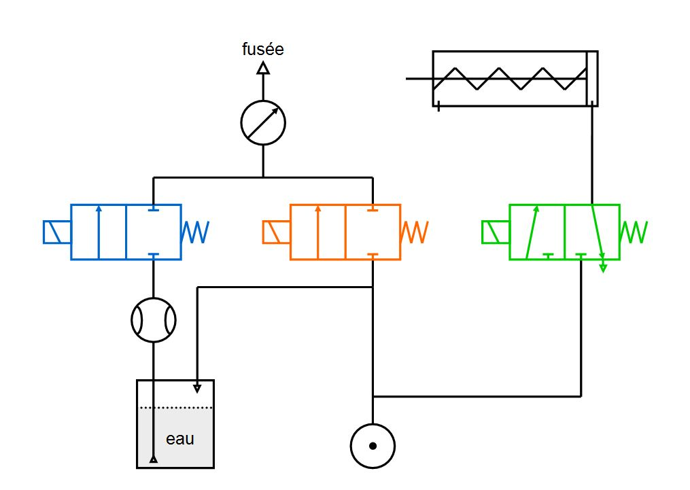
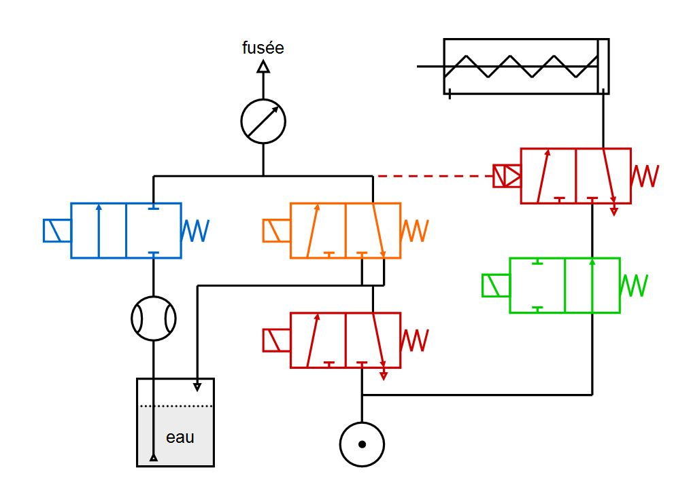

Remplissage air/eau
Pour permettre le décollage de la fusée, il est nécessaire d’insérer dans celle-ci un mélange air / eau. Par ailleurs, lors du remplissage, il faut maintenir la fusée en place et assurer l’étanchéité. Ces différentes fonctions peuvent être réalisées manuellement ou automatiquement par le biais du microcontrôleur.
Solution
Pour réaliser ces taches, nous avons choisis d’utiliser des distributeurs ainsi que des électrovannes qui permettent l’entrée ou non des fluides en direction de la fusée et du vérin (permettant le maintien).
| Câblage pneumatique réalisé sur la maquette | Câblage pneumatique théorique |
|  |  |
Pour la réalisation de la maquette, nous avons simplifié le câblage. Celui-ci permet uniquement de remplir la fusée d’eau (électrovanne bleue), de comprimé l’air présent dans celle-ci (électrovanne orange) et de la maintenir tout en réalisant l’étanchéité (distributeur vert). En théorie, système de sécurité est nécessaire, c’est ce que nous avons ajouté sur le second câblage (distributeurs rouges). Ces distributeurs permettent en cas de coupure de courant, volontaire ou non, de décompresser la fusée (distributeur de droite) puis de relâcher le système de maintien lorsque la fusée n’est plus sous pression (distributeur de gauche). Les risques sont ainsi limités en cas de problème.
De plus, nous avons inséré dans le câblage un manomètre permettant de connaitre la pression présente dans la fusée et un débitmètre qui nous indique le volume d’eau inséré. L’ensemble du système nécessite pour son fonctionnement une alimentation 24V pouvant être réalisée à l’aide de deux batteries 12V en séries, un compresseur qui peut être alimenté par ces mêmes batteries et une réserve d’eau permettant la réalisation de plusieurs tirs de fusées consécutifs.
Câblage électrique
Les électrovannes sont reliées au PIC par l'intermédiaire d'une carte relais en mode automatique (voir image).
En mode manuel, elles sont commandées par les interrupteurs présents sur le boitier de commande.